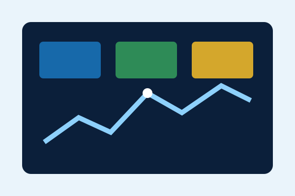
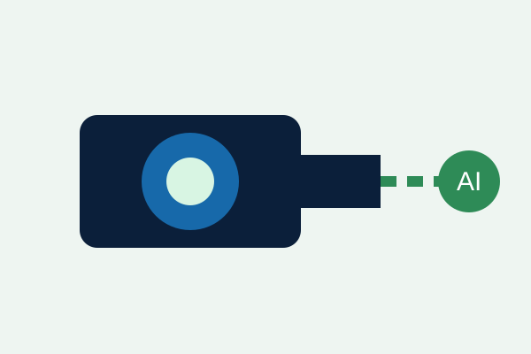

Executive Overview
Summarizes uptime, open incidents, daily volume, and risk so leadership can understand performance quickly.
- KPI cards
- Risk counts
- Exportable summaries
Product solutions
VisionOps is designed as a flexible business tool that turns device and process data into clear priorities for managers, operators, and support teams.

Summarizes uptime, open incidents, daily volume, and risk so leadership can understand performance quickly.

Tracks cameras, sensors, gateways, or other connected business equipment from a common interface.
Helps teams review severity, suggested actions, assignments, and resolution status without searching multiple systems.
Example workflow
Receive status updates from business systems or connected devices.
Group events by system, severity, time, and operational impact.
Use AI-assisted analysis to propose a next action in plain language.
Require a person to verify the recommendation before acting.
Create a management summary for accountability and improvement.
Responsible AI by design
VisionOps labels recommendations clearly, uses sample data in this prototype, avoids automatic high-impact decisions, and reminds users to verify outputs before acting.